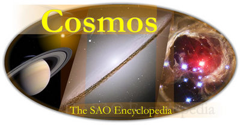

About Cosmos: The Swinburne Astronomy Online Encyclopedia
Cosmos is a unique astronomy reference written by research astronomers. Our encyclopedia entries are for a general audience who wish to know detailed information on a wide range of astronomical topics. Cosmos is an evolving resource, with new entries being added all the time.
Production Credits
Cosmos: The Swinburne Astronomy Online Encyclopedia was written by:
- Dr Lisa Germany
- Dr Rob Proctor
- Dr Christopher Fluke
- Ms Amaya Gaztelu
- Dr Glen Mackie
- Dr Sarah Maddison
- Mr Alfred Lagos
- Dr Virginia Kilborn
- Prof Matthew Bailes
with contributions from A. Prof. Alister Graham, Dr. Indra Bains, Dr. Meryl Waugh, Dr. Michael Murphy, Dr Allie Ford, Dr Alexander Knebe and Ruth Musgrave. Technical setup was provided by Mr Paul Bourke (search engine), Dr. Nick Jones (drupal) and Dr. David Barnes (drupal). Reviews were undertaken by staff, postdoctoral researchers and research students from the Swinburne Centre for Astrophysics & Supercomputing.
Image Credits
All material in Cosmos: The SAO Encyclopedia, including images and text, is copyright © Swinburne University of Technology except where indicated. If you would like to make use of any of our images, please contact us (cosmos @ swin.edu.au).
About the main Cosmos logo

Our Cosmos main page logo, comprises three objects inside an all-sky projection. From left to right, Saturn, the Sombrero galaxy (Messier 104) and the red giant star V838 Monocerotis (V838 Mon).
Saturn, regarded as the most spectacular Solar System planet with a distinct ring system, is composed of about 75% hydrogen and 25% helium. It has a rocky core, and distinct liquid metallic hydrogen and molecular hydrogen layers. The prominent ring system can be seen from Earth and the gap between the major A and B rings is the Cassini division. The rings are composed of small particles ranging in size from millimetres or so to several metres and are less than one kilometre thick. Saturn has been visited by Pioneer 11 in 1979, Voyager 1 and 2, and Cassini is currently orbitting it. Credit: NASA/JPL/Space Science Institute.
{kind=link}
The Sombrero galaxy, (M104) is notable for a white bulge of old, evolved stars intersected by a system of dramatic dust lanes. We see the galaxy nearly edge-on and it was named the Sombrero because of its resemblance to the Mexican hat. It is located in the Virgo cluster of galaxies and is one of the most massive galaxies in that cluster. The Hubble Space Telescope easily resolves M104’s system of globular clusters. X-ray emission suggests that there is material falling into the nucleus, where a 1 billion solar-mass black hole probably resides. Credit: NASA and The Hubble Heritage Team (STScI/AURA).
{kind=link}
V838 Monocerotis (V838 Mon) is a red supergiant star. The Hubble Space Telescope image shows interstellar dust and gas associated with a dramatic brightening in 2002. The shell-like features are light echoes, and shows signs of significant turbulence. The dust and gas were likely ejected from V838 Mon in a previous event, some tens of thousands of years ago. The surrounding dust remained invisible until it was illuminated by the brilliant explosion of the central star in 2002. V838 Mon is located about 20,000 light-years away from Earth in the direction of the constellation Monoceros. Credit: NASA and The Hubble Heritage Team (AURA/STScI).
{kind=link}
The Cosmos team can be contacted at: cosmos @ swin.edu.au